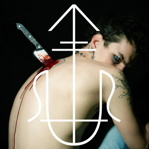
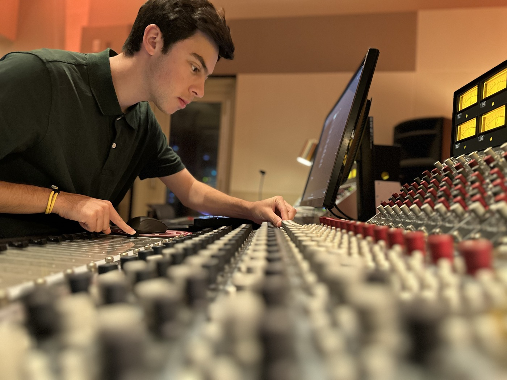
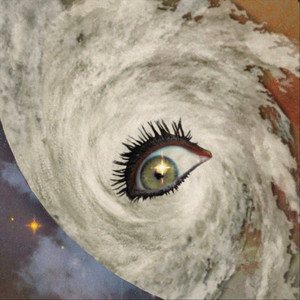
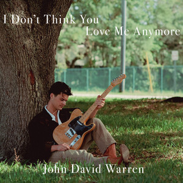
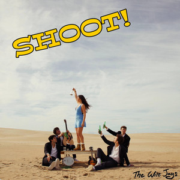

Brayton
Experience
Specializes in djent and metal recording/mixing, DSP, and technical direction.
View portfolio ↓
Selected work
Scroll through a selection of releases Mike has worked on.

Brayton

The Nusonics

John David Warren
Nicole Emelie
Alexys Dowling

The Wire Jays
Skills & tools
Elsewhere
Mike is a Washington, D.C.-based audio software engineer, producer, mix engineer, and guitarist. His work connects creative production, recording, live sound, and audio technology.